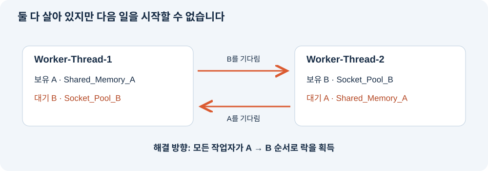

평가 문항별 설명과 답변
평가 항목 1부터 4까지 총 20개 문항에 대해 질문의 뜻과 답변 예시를 정리했습니다. 인용문은 발표·질의응답에서 사용할 수 있는 문장입니다. 항목 5의 보너스는 제외했습니다.
답변의 실험 근거는 2026년 10월 20일 수집한 자료입니다. 종료 시간은 계측과 확인 지연을 포함한 관측 시간이며, 관측 창 끝에 수집기가 종료한 경우에는 그때까지 생존했다는 뜻입니다. 특히 CPU는 앱이 기록한 부하와 OS에서 측정한 점유율을 구분해야 합니다.
항목 1 장애 재현과 증거
1-1 메모리가 증가하다가 종료되는 패턴
질문: [OOM] 메모리 사용량이 선형적으로 증가하다가 프로세스가 강제 종료되는 패턴이 로그에 기록되어 있는가?
무엇을 묻나요: 메모리가 높았다는 한 번의 수치가 아니라, 시간에 따라 계속 증가한 기록과 종료 원인이 함께 있는지 묻습니다.
이렇게 설명하세요MEMORY_LIMIT=200 실행에서 앱의 Heap가 25, 50, 75MB처럼 일정량씩 증가하는 로그를 확인했습니다. 대부분 약 3초 간격으로 증가했고, 외부에서 측정한 RSS도 계단 형태로 상승했습니다. 마지막에는 200MB 한도 도달과 MemoryGuard의 종료 메시지가 이어졌습니다. 따라서 메모리가 누적되다가 앱의 보호 정책으로 종료된 것으로 판단했습니다.
설명할 때: ‘선형적 증가’는 여기서 대체로 일정한 속도로 누적되는 패턴을 뜻합니다. 모든 표본이 정확한 직선 위에 있거나, RSS와 앱 Heap의 값이 같다는 뜻은 아닙니다.
근거: 메모리 그래프 · 200MB 실행 캡처 · OOM 보고서


1-2 MEMORY_LIMIT 변경 전후 비교
질문: [OOM] 환경변수(MEMORY_LIMIT) 조정 후 프로세스 생존 시간이 늘어난 Before & After 결과가 있는가?
무엇을 묻나요: 설정을 실제로 변경해 다시 실행했고, 생존 시간이 수치로 달라졌는지 묻습니다.
이렇게 설명하세요메모리 한도만 50MB에서 200MB로 변경했습니다. 50MB에서는 약 6.75초, 200MB에서는 약 24.09초 관측 후 종료를 확인했습니다. 약 3.57배 더 오래 생존했지만 두 실행 모두 MemoryGuard로 종료됐습니다. 한도를 늘려 시간을 벌었을 뿐, 누적 원인이 해결된 것은 아닙니다.
통제한 조건: 두 실행 모두 CPU_MAX_OCCUPY=100, MULTI_THREAD_ENABLE=false입니다. 이렇게 다른 조건을 고정해야 메모리 한도 변경의 영향을 비교할 수 있습니다.
근거: 실측 비교표 · 변경 전 캡처 · 변경 후 캡처

1-3 CPU 임계치 초과와 종료
질문: [CPU] CPU 사용률이 임계치를 초과하여 프로세스가 종료되는 패턴이 로그에 기록되어 있는가?
무엇을 묻나요: 부하 증가, 기준 위반, 보호 종료를 시간순으로 연결할 수 있는지 묻습니다.
이렇게 설명하세요앱 로그에서 Current Load가 56.50%까지 증가한 뒤 CPU Threshold Violated와 WATCHDOG SIGTERM 메시지가 나왔습니다. 그래서 앱 내부 부하 기준 위반에 따른 보호 종료는 확인했습니다. 다만 이 실행의 외부 CPU 측정 최고치는 약 9.97%였으므로, 실제 OS CPU가 50%를 넘었다고 말할 수는 없습니다.
현재 증거의 범위: 앱의 보호 정책 재현은 확인했습니다. 실제 OS CPU 과점유 재현이라는 의미로 평가한다면 이 자료에는 한계가 있습니다. ‘56.5%’가 어느 지표인지 반드시 함께 설명해야 합니다.
근거: CPU 종료 캡처 · 앱 부하 그래프 · 외부 CPU 그래프


1-4 CPU_MAX_OCCUPY 변경 전후 비교
질문: [CPU] 환경변수(CPU_MAX_OCCUPY) 조정 후 프로세스 종료 여부/생존 시간이 변화한 Before & After 비교 결과가 있는가?
무엇을 묻나요: 설정 변경이 실제 종료 동작에 어떤 영향을 주었는지 묻습니다. 무조건 값을 높이는 것이 개선은 아닙니다.
이렇게 설명하세요CPU_MAX_OCCUPY=100에서는 약 37.11초 관측 후 Watchdog 종료를 확인했습니다. 10에서는 최소 약 76.12초 생존했고 관측 종료 후 수집기가 정리했습니다. 이 앱에서는 10 설정에서 부하 증가와 냉각이 반복됐으므로, 완화 방향은 100에서 10으로 낮추는 것입니다.
읽을 때 주의: 실제 실행 순서는 10 → 100이어서 폴더 이름은 cpu-before=10, cpu-after=100입니다. 조치 관점의 비교는 장애 조건 100 → 완화 조건 10입니다. 메모리 한도 512MB와 MULTI_THREAD_ENABLE=false는 동일했습니다.
근거: CPU 보고서의 조치 관점 비교 · 10 설정 캡처 · 100 설정 캡처

1-5 살아 있으나 멈춘 상태 확인
질문: [Deadlock] 프로세스가 살아있으나(PID 존재) CPU/메모리 변화 없이 로그가 멈춘 상태를 식별했는가?
무엇을 묻나요: 프로세스의 존재와 실제 작업 진행을 구분했는지 묻습니다.
이렇게 설명하세요ps로 PID 1059가 계속 존재하는 것을 확인했습니다. 마지막 10초 동안 RSS는 18,244KiB, 로그 크기는 2,717bytes로 일정했고 구간 CPU는 0%였습니다. 스레드들은 futex_wait_queue에서 대기했고, 마지막 앱 로그에서는 서로 상대의 락을 기다리고 있었습니다. 이 증거들을 합쳐 살아 있지만 작업이 멈춘 상태로 판단했습니다.
설명할 때: CPU 0% 또는 대기 상태만으로 교착을 확정하면 안 됩니다. 정상 유휴나 I/O 대기도 가능하므로, 이 사례에서는 락 순환 관계까지 확인했습니다.
근거: 교착 상태 캡처 · 마지막 10초 비교

1-6 MULTI_THREAD_ENABLE 변경 전후 비교
질문: [Deadlock] 환경변수(MULTI_THREAD_ENABLE) 조정 후 데드락 재현/회피 비교 결과가 있는가?
무엇을 묻나요: 스레드 설정을 바꿨을 때 실제로 작업 진행이 달라졌는지 묻습니다.
이렇게 설명하세요true에서는 두 작업 스레드가 서로의 락을 기다리며 정체됐습니다. false에서는 작업 완료 이후에도 메모리·CPU 로그가 계속 출력됐고, 캐시 정리 후 작업이 이어졌습니다. 메모리 한도 512MB와 CPU 설정 10은 고정했습니다. 따라서 관측 구간에서는 false 설정으로 교착을 회피한 것을 확인했습니다.
조치의 의미: 동시 락 경쟁을 피한 임시 조치입니다. 처리량이 달라질 수 있으며, 멀티스레드 코드의 잘못된 락 획득 순서를 수정한 것은 아닙니다.
false는 교착을 유발하는 동시 작업 모드를 끕니다. 이 실행에서도 메모리·CPU 작업용 스레드 등은 남을 수 있으므로, 앱 전체가 반드시 한 스레드가 된다고 설명하면 안 됩니다. 멈춘 실행을 종료하고 설정을 바꿔 새로 실행한 결과를 비교했습니다.

1-7 보고서 형식
질문: [Format] 3건의 리포트 모두 GitHub Issue 구조(현상 → 증거 → 원인 → 조치)를 갖추고 있는가?
무엇을 묻나요: 다른 사람이 현상을 이해하고 판단 근거와 조치를 따라갈 수 있는 구조인지 묻습니다.
이렇게 설명하세요세 보고서 모두 Description에서 현상을 설명하고, Evidence & Logs에서 PID·시각·로그·관제 수치를 제시했습니다. Root Cause Analysis에서는 증거와 원인을 연결했고, Workaround & Verification에서는 환경변수 변경과 전후 결과를 비교했습니다. 따라서 현상, 증거, 원인, 조치 순서로 읽을 수 있습니다.
보고서는 GitHub Issue 본문으로 사용할 수 있는 Markdown 파일입니다. 원격 GitHub Issue 등록까지 수행한 것은 아닙니다.
근거: OOM 보고서 · CPU 보고서 · Deadlock 보고서
1-8 증거에 포함해야 할 정보
질문: [Evidence] 리포트에 PID, 로그 타임스탬프, 핵심 로그 메시지가 포함된 증거(스크린샷 또는 로그 발췌)가 첨부되어 있는가?
무엇을 묻나요: 어느 프로세스에서 언제 어떤 일이 생겼는지 원본으로 확인할 수 있는지 묻습니다.
이렇게 설명하세요각 실행의 PID와 환경변수는 결과 JSON에, 시간과 핵심 메시지는 앱 로그에, 자원 변화와 스레드 상태는 CSV와 시스템 로그에 저장했습니다. 예를 들어 OOM 캡처에는 PID 807과 2026-10-20 03:18:44의 MemoryGuard 종료 메시지가 함께 있습니다. 보고서에는 원본 링크와 로그 발췌, 캡처를 첨부했습니다.
캡처는 실제 저장 로그를 HTML로 표시한 화면입니다. 앱 로그는 KST, 관제 CSV와 시스템 스냅샷은 UTC이므로 9시간 차이를 맞춰 비교합니다. 서로 다른 시각이나 부모 PID를 같은 사건으로 오인하지 않는 것이 중요합니다.
맨 위로항목 2 도구 선택과 진단 과정
2-1 monitor.sh의 메모리 추적 방법
질문: monitor.sh에서 메모리 증가 패턴을 추적하기 위해 사용한 명령어와 데이터 추출 방법을 구체적으로 답변할 수 있는가?
무엇을 묻나요: ‘모니터링했다’는 말에서 더 나아가 어떤 파일의 어떤 값을 어떤 간격으로 수집했는지 설명할 수 있는지 묻습니다.
이렇게 설명하세요monitor.sh는 Bash에서 Python을 실행해 /proc/PID/status를 반복해서 읽습니다. 각 줄을 콜론 기준으로 나누고 VmRSS 항목의 숫자를 추출합니다. 실제 실험에서는 0.5초 간격으로 PID, 시각, RSS를 CSV에 저장했고, KiB 값을 1024로 나눠 MiB 그래프를 그렸습니다. 한 번의 사용량이 아니라 시간순 표본의 증가 패턴을 비교했습니다.
다음은 현재 앱 PID를 APP_PID에 지정했을 때 사용하는 명령 형식입니다.
APP_LOG=evidence/oom-after/app.log bash monitor.sh "$APP_PID" 0.5
ps -p "$APP_PID" -o pid,ppid,etimes,stat,rss,args코드에서 확인할 곳: line.split(':', 1)로 키와 값을 나누고, status.get("VmRSS", "0 kB").split()[0]으로 숫자를 추출합니다. 실제 작업을 수행하는 자식 PID를 사용해야 대기만 하는 부모의 메모리를 측정하는 실수를 피할 수 있습니다.
근거: monitor.sh · OOM 관제 원본
2-2 CPU 도구와 옵션의 의미
질문: 프로세스의 CPU 사용률을 확인하기 위해 선택한 도구와 적용한 옵션의 의미를 구분하여 서술할 수 있는가?
무엇을 묻나요: 프로세스 전체와 스레드별 측정을 구분하고, 명령 옵션이 무엇을 선택하는지 아는지 묻습니다.
이렇게 설명하세요대상 확인에는 ps -p를, 스레드별 상태 확인에는 ps -L과 top -H를 사용했습니다. 저장 가능한 출력이 필요해서 top의 -b와 -n 1을 함께 사용했습니다. CPU의 짧은 구간 변화는 monitor.sh에서 CPU 시간 증가량을 계산해 확인했습니다. ps의 %CPU는 생애 평균이라 순간 사용률과 다를 수 있습니다.
| 명령 또는 옵션 | 의미 |
|---|---|
| ps -p PID | 대상 프로세스 선택 |
| ps -o pid,pcpu,rss | 필요한 출력 열 선택 |
| ps -L -p PID | 대상의 스레드별 정보 표시 |
| top -b | 터미널 조작 없는 배치 출력 |
| top -H | 스레드별 표시 |
| top -n 1 -p PID | 대상 PID를 한 번 출력 |
구간 CPU는 /proc/PID/stat의 utime + stime 증가량을 CLK_TCK로 나눠 초로 바꾸고, 실제 경과 시간으로 나눈 뒤 100을 곱합니다. 한 코어를 100%로 보는 값이며 여러 코어를 동시에 쓰면 100%를 넘을 수 있습니다. 첫 표본은 이전 값이 없어 계산하지 않습니다.
근거: CPU 시스템 도구 출력 · 구간 CPU 계산 코드
2-3 살아 있지만 멈춘 상태의 판단 순서
질문: 프로세스가 "살아있지만 멈춰있는 상태"를 진단하기 위해 어떤 도구를 어떤 순서로 사용했는지, 본인의 판단 흐름을 논리적으로 제시할 수 있는가?
무엇을 묻나요: 도구 이름을 나열하는 대신, 앞의 관측 때문에 다음 확인을 했다는 흐름을 설명할 수 있는지 묻습니다.
이렇게 설명하세요먼저 ps로 같은 PID가 살아 있는지 확인했습니다. 살아 있었기 때문에 종료 원인보다 진행 여부를 살폈고, monitor.sh의 반복 표본에서 CPU·RSS·로그 크기가 정체된 것을 확인했습니다. 이어 ps -L과 top -H로 스레드 대기를 확인한 뒤, 마지막 앱 로그에서 각 스레드의 보유 락과 대기 락을 연결했습니다. 마지막으로 동시 작업 모드를 끈 새 실행에서 작업이 진행되는지 비교했습니다.
판단 순서: PID 존재 확인 → 반복 자원·로그 관측 → 스레드 대기 확인 → 락 순환 관계 추론 → 설정 변경으로 비교 검증.
근거: Deadlock 보고서 · 락 관계 그림
맨 위로
항목 3 운영체제 원리 이해
3-1 메모리 보호 정책이 프로세스를 종료하는 이유
질문: 메모리 누수가 발생했을 때 애플리케이션의 메모리 보호 정책이 해당 프로세스를 강제 종료하는 이유를 설명할 수 있는가?
무엇을 묻나요: 한 프로그램의 메모리 문제가 서버 전체에 어떤 영향을 줄 수 있는지 이해하는지 묻습니다.
이렇게 설명하세요사용이 끝난 데이터가 해제되지 않고 쌓이면 다른 프로세스가 쓸 메모리가 줄어듭니다. 메모리 회수와 스왑 부담이 커져 서버 전체가 느려질 수 있기 때문에, 앱은 정해진 한도에서 자신을 종료해 피해를 제한합니다. 이번에는 MemoryGuard 로그로 앱 자체 보호 종료를 확인했습니다. 프로세스를 재시작하거나 한도를 늘려도 누적 원인을 고치지 않으면 다시 발생할 수 있습니다.
구분할 개념: 앱 MemoryGuard는 애플리케이션 내부 정책이고, 커널 OOM killer는 운영체제가 메모리 부족 상황에서 실행하는 별도의 메커니즘입니다. 강제 종료라는 결과만 보고 둘을 동일시하면 안 됩니다.
3-2 CPU 과점유 프로세스를 종료하는 이유
질문: CPU 과점유 시 단일 프로세스를 종료하는 것이 시스템 보호에 왜 필요한지 근거를 제시할 수 있는가?
무엇을 묻나요: CPU 경쟁이 다른 서비스의 응답 지연으로 이어지는 이유와 보호 조치의 목적을 설명할 수 있는지 묻습니다.
이렇게 설명하세요여러 프로세스가 한정된 CPU 시간을 나눠 쓰기 때문에 한 프로세스가 과도한 작업을 계속하면 다른 요청의 대기 시간이 늘 수 있습니다. 정책을 위반한 작업을 종료하면 경쟁과 부하를 줄여 다른 서비스의 응답성을 보호할 수 있습니다. 다만 CPU가 높다는 이유만으로 항상 종료해야 하는 것은 아니고, 서비스 지연과 작업 목적을 함께 판단해야 합니다. 이번 앱에서는 Watchdog가 종료 정책을 실행한 메시지를 확인했습니다.
추가 설명: 프로세스 종료는 보호 수단 중 하나입니다. 운영 환경에서는 작업량 제한, CPU 자원 제한, 요청 분산 등을 먼저 적용할 수도 있습니다. 로그의 nice=10은 실행 우선순위를 낮췄다는 뜻이며, CPU 사용률의 절대 상한을 정한 것은 아닙니다.
3-3 상호 배제와 순환 대기로 설명하는 Deadlock
질문: 교착 상태(Deadlock)가 발생하는 원리를 "상호 배제"와 "순환 대기" 개념으로 설명할 수 있는가?
무엇을 묻나요: 단순히 ‘서로 기다린다’에서 더 나아가, 왜 각 스레드가 기다림에서 벗어나지 못하는지 설명할 수 있는지 묻습니다.
이렇게 설명하세요상호 배제는 한 자원의 락을 동시에 하나의 스레드만 가질 수 있다는 뜻입니다. 스레드 1이 A를 가진 채 B를 기다리고, 스레드 2가 B를 가진 채 A를 기다리면 서로의 해제를 기다리는 원이 생기는데 이것이 순환 대기입니다. 보유한 락을 놓지 않고 기다리는 점유 대기와 강제로 빼앗지 않는 비선점까지 함께 성립하면 두 스레드 모두 진행하지 못할 수 있습니다.

쉽게 말하면: 한 사람은 열쇠 A, 다른 사람은 열쇠 B를 가진 채 서로 상대의 열쇠를 달라고 기다리는 상황입니다. 락 획득 순서를 모두 A → B로 통일하면 이런 역순 획득으로 생기는 순환 대기를 끊을 수 있습니다.
3-4 로그에서 순환 의존을 추적한 방법
질문: 로그에서 스레드 간 순환 의존 관계(A→B, B→A)를 어떻게 파악했는지 추적 과정을 설명할 수 있는가?
무엇을 묻나요: 교착 그림을 외워 설명하는 것이 아니라, 실제 로그의 어떤 줄에서 소유와 대기를 알아냈는지 묻습니다.
이렇게 설명하세요스레드 이름별로 LOCK ACQUIRED와 WAITING 메시지를 묶었습니다. Worker-Thread-1은 Shared_Memory_A를 획득한 뒤 Socket_Pool_B를 기다렸습니다. Worker-Thread-2는 Socket_Pool_B를 획득한 뒤 Shared_Memory_A를 기다렸습니다. 각 스레드가 기다리는 자원을 상대가 보유하고 있으므로 Thread-1 → B → Thread-2 → A → Thread-1이라는 순환 관계를 찾았습니다.
| KST 시각 | 로그에서 확인한 사실 |
|---|---|
| 03:20:54.019 | Thread-1이 Shared_Memory_A 획득 |
| 03:20:54.020 | Thread-2가 Socket_Pool_B 획득 |
| 03:20:56.030 | Thread-2가 Shared_Memory_A 대기 |
| 03:20:56.033 | Thread-1이 Socket_Pool_B 대기 |
근거: 원본 줄 번호가 있는 교착 캡처 · 원본 앱 로그
맨 위로항목 4 운영 환경 적용과 개선
4-1 장애 발생 전에 메모리 누수를 탐지하는 방법
질문: 만약 이번 미션의 agent-leak-app이 실제 운영 서버에서 동작하고 있었다면, 메모리 누수를 장애 발생 전에 탐지하기 위해 현재의 monitor.sh를 어떻게 개선하겠는가?
무엇을 묻나요: 현재 수집 기능을 ‘장애가 나기 전에 경고하고 대응하는 감시’로 발전시킬 수 있는지 묻습니다.
이렇게 설명하세요현재 사용량뿐 아니라 최근 몇 분의 메모리 증가 속도를 계산하겠습니다. 같은 지표 기준의 한도를 알고 있다면 남은 메모리를 증가 속도로 나눠 한도 도달 시간을 추정하고, 여러 표본에서 위험 조건이 지속될 때 알림을 보내겠습니다. 작업량과 처리 완료 수를 함께 보면서 정상적인 일시 증가와 지속 누적을 구분하겠습니다. 재시작으로 PID가 바뀌는 경우도 추적하고 로그 회전과 저장 공간 제한을 추가하겠습니다.
예시: 같은 측정 기준으로 한도 500MiB, 현재 400MiB, 증가율 10MiB/분이라면 약 10분 뒤 한도에 도달할 것으로 추정할 수 있습니다. 이는 설명용 가정이며 이번 실험의 실제 측정값은 아닙니다. 증가율이 달라지면 예측도 달라지고, 앱 Heap 한도에 OS RSS를 그대로 대입하면 부정확할 수 있습니다.
4-2 가장 치명적인 장애와 근본 예방
질문: 이번 미션에서 겪은 3가지 장애(OOM, CPU Spike, Deadlock) 중 실제 서비스 환경에서 가장 치명적인 것은 무엇이라고 생각하는가? 그 이유와 함께, 해당 장애를 근본적으로 예방하는 방법을 제안할 수 있는가?
무엇을 묻나요: 정답 하나를 고르는 문제가 아니라, 서비스의 감시·영향 범위·복구 조건에 근거해 판단하는 문제입니다.
이렇게 설명하세요PID 존재만 정상 기준으로 삼는 서비스라면 Deadlock을 가장 위험하게 보겠습니다. 프로세스가 종료되지 않아 자동 재시작이 작동하지 않고 요청 처리가 오래 멈출 수 있기 때문입니다. 탐지에는 작업 완료 시각과 진행률 감시를 추가하겠습니다. 근본 예방에는 모든 경로의 락 획득 순서를 통일하고, 락을 잡은 채 외부 I/O를 기다리지 않도록 구조를 바꾸겠습니다.
판단의 조건: 메모리 고갈이 다른 서비스까지 영향을 주는 서버라면 OOM이 더 치명적일 수 있습니다. ‘항상 Deadlock이 최악’이 아니라 어떤 환경을 가정했는지를 함께 말하면 됩니다.
4-3 OOM과 Deadlock이 동시에 발생했을 때의 순서
질문: 만약 동일한 서버에서 OOM과 Deadlock이 동시에 발생한다면, 어떤 순서로 트러블슈팅을 진행하겠는가? 우선순위 판단의 근거를 설명할 수 있는가?
무엇을 묻나요: 영향 확산을 막는 일과 원인 증거를 보존하는 일 사이에서 우선순위를 정할 수 있는지 묻습니다.
이렇게 설명하세요먼저 서버 전체 메모리 여유와 다른 서비스 영향을 확인하겠습니다. 고갈이 임박했다면 트래픽을 정상 인스턴스로 우회하고 문제 인스턴스를 격리해 피해 확산을 막겠습니다. 가능한 짧은 시간에 PID, 자원 추세, 마지막 종료 메시지와 스레드 대기 상태를 남긴 뒤 복구하겠습니다. 메모리 여유가 충분하고 영향이 격리돼 있다면 재시작 전에 교착 증거를 먼저 확보하겠습니다.
그다음 분석: 같은 프로세스의 문제인지, 교착 때문에 처리되지 못한 요청이 쌓여 메모리도 증가했는지 시간순으로 확인합니다. 급한 보호 조치 후에는 메모리와 동시성 조건을 분리해 재현합니다. 무조건 OOM 먼저 또는 Deadlock 먼저라는 고정 순서보다 피해 범위와 고갈의 긴급성이 판단 기준입니다.
4-4 소스 코드 수준의 개선
질문: 이번 미션의 환경변수 조정은 임시 조치였다. 만약 소스 코드를 직접 수정할 수 있다면, 각 장애 유형별로 어떤 코드 레벨의 개선을 하겠는가?
무엇을 묻나요: 제한값 변경이나 기능 비활성화를 넘어서 장애가 생기는 원인을 제거할 방법을 제시할 수 있는지 묻습니다.
이렇게 설명하세요OOM은 어떤 객체가 계속 남는지 프로파일링한 뒤 불필요한 참조를 해제하고 캐시·큐의 최대 크기를 제한하겠습니다. CPU는 반복 계산과 busy loop를 찾아 줄이고 한 번에 처리할 작업량과 실행 시간을 제한하겠습니다. Deadlock은 모든 코드 경로의 락 순서를 통일하고 중첩 락과 락 보유 중 외부 I/O를 줄이겠습니다. 수정 후에는 같은 부하에서 메모리 안정성, CPU·응답 지연, 작업 진행률을 각각 검증하겠습니다.
| 장애 | 구체적인 코드 개선 예 | 확인할 결과 |
|---|---|---|
| OOM | 크기 제한 큐, 캐시 만료, 큰 데이터의 분할 처리 | 작업을 반복해도 메모리가 무한히 누적되지 않음 |
| CPU | 중복 계산 제거, 효율적인 알고리즘, 대기 없는 반복문 개선 | 같은 처리량에서 CPU와 요청 지연 감소 |
| Deadlock | A → B 락 순서 통일, 예외 시에도 락 해제, 시간 제한과 실패 처리 | 동시 실행 중 작업 진행이 멈추지 않음 |
이번 미션에서는 제공 바이너리의 소스를 분석하지 않았으므로 위 내용은 코드를 수정할 수 있을 때의 개선 방향입니다. 실제 버그 위치를 확인했다는 의미는 아닙니다.
4-5 처음부터 다시 수행한다면 바꿀 점
질문: 다시 이 미션을 처음부터 수행한다면, 트러블슈팅 과정에서 어떤 점을 다르게 접근하겠는가?
무엇을 묻나요: 실제 시행착오를 바탕으로 더 정확하고 효율적인 조사 방법을 제시하는지 묻습니다.
이렇게 설명하세요시작 전에 실제 작업을 수행하는 자식 PID부터 확인하겠습니다. 첫 관제에서는 대기용 부모 PID를 보면 메모리 증가를 놓칠 수 있다는 점을 확인했습니다. 종료 직전 출력이 빠지지 않도록 처음부터 PTY로 수집하고, 데드락 실험에서는 CPU 설정을 낮춰 다른 보호 종료가 먼저 발생하지 않게 하겠습니다. 이후 설정 하나씩 변경하고 조건별 반복 실행으로 재현성과 시간 변동을 확인하겠습니다.
이번 실험에서 얻은 교훈: 올바른 대상을 측정하고, 로그를 빠짐없이 남기고, 다른 장애의 간섭을 줄여야 원인을 설명할 수 있습니다. 재시작은 복구 방법일 수 있지만 원인 규명 자체를 대신하지는 못합니다.
맨 위로답변 전 마지막 확인
| 꼭 구분할 것 | 이 실험에서의 정확한 표현 |
|---|---|
| 앱 부하와 OS CPU | 앱 부하 56.5%로 Watchdog 종료 확인, 같은 실행의 외부 CPU 최고치 약 9.97% |
| 앱 보호 종료와 커널 OOM | MemoryGuard에 의한 앱 자체 종료 |
| PID 생존과 정상 진행 | Deadlock에서는 PID가 살아 있어도 작업이 멈춤 |
| 생존과 실험 종료 | 낮은 CPU 설정·교착 비교는 관측 후 수집기가 종료 |
| 임시 조치와 근본 해결 | 한도 조정·동시 작업 모드 비활성화는 원인 코드 수정과 다름 |